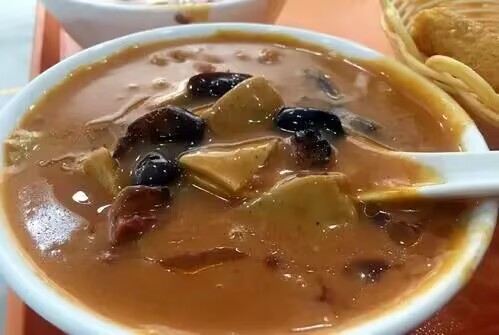

全部分类
热门搜索
洛阳驴肉汤

驴肉汤是河南洛阳著名的汉族小吃。史料记载驴肉有甘酸而平，安心气，解心烦，止疯狂，补血益气等特点。可缓解远年劳损及风眩等症，可煮食，或以汁做粥食，故驴肉汤对神志失调的患者较为适宜。汤中佼佼者，非它莫数，凭着“天上的龙肉地下的驴肉”的美誉，近些年来流行指数一路看涨。
胡辣汤 胡辣汤，又名糊辣汤，起源于河南中部。是中国北方早餐中常见的传统汤类名吃。由多种天然中草药按比例配制的汤料在加入胡椒和辣椒又用骨头汤做底料的胡辣汤，其特点是微辣，营养丰富，味道上口，十分适合配合其它早点进餐。目前，已经发展成为河南及河南周边省份都喜爱和知晓的小吃之一。
阎家羊肉汤阎家羊肉汤，已传四代人，至今已有1500年的历史。第二代人阎顺生，对羊肉汤进行了创新，使调料配置适当，汤味更加鲜美，从此，阎家羊肉汤闻名豫西城乡。阎家羊肉汤的特点是：用鲜羊肉，当天用肉，当天宰羊；香料齐全、量大。用胡椒粉而不用辣椒，咸淡适口，汤味鲜美。喝之爽而不黏，口感滑、顺、醇。
焦炸丸子汤
焦炸丸子汤是洛阳水席上相当重要的一道菜，上菜的时候，服务员一般会端上来两个海碗，一个碗里放着刚炸好的丸子，另一个碗里放着热腾腾的酸辣汤。把汤往丸子上一浇会发出滋啦的声音。吃这道菜的时候一定要快，才能吃出来丸子焦脆的口感。 而焦炸丸子之所以叫焦炸丸子，就是因为它吃起来焦脆可口。吃丸子，一口一个嘎嘣脆，相当的爽，汤则酸爽滑口，来到洛阳旅游必不能错过的一道美味菜